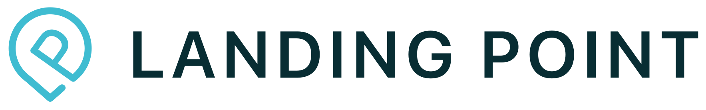

1
Map the workflow
Map Bullhorn, Matador job feeds, forms, and Sage Intacct handoffs, then mark the workflows that slow new client onboarding.

Saw Landing Point is adding business development capacity. That usually means more client intake, more searches, and more pressure on the systems that keep recruiters, consultants, and finance aligned.
A Business Ambassador hire points to a push for more market share, not just another desk. Landing Point already runs a high-touch model across recruiting, consulting, and technology hiring. That growth puts pressure on Bullhorn data, job board flows, and handoffs between sales, recruiters, and back office. If the platform work lags, new wins can turn into slower searches, duplicate work, and thin reporting.
Engagement model: a 6-week dedicated squad under your process owner, with weekly demos and a clean handoff plan.
Map Bullhorn, Matador job feeds, forms, and Sage Intacct handoffs, then mark the workflows that slow new client onboarding.
Build small API fixes and automation jobs for duplicate checks, candidate status updates, and clean recruiter follow-up queues.
Tune the job board and key forms so mobile candidates can search, apply, and get tracked with less friction.
Add QA smoke tests around search, forms, and Bullhorn sync so sales growth does not create silent breaks.

Built a modern job portal for launch in Germany.
Read case studyA short working session can define the first pilot.
Start the conversation